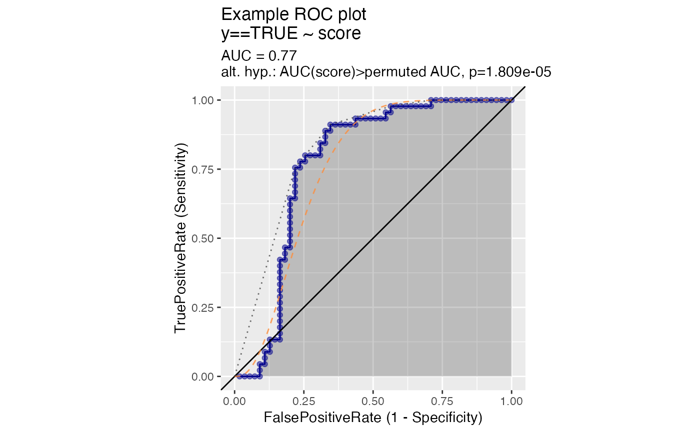

Plot receiver operating characteristic plot.
ROCPlot(
frame,
xvar,
truthVar,
truthTarget,
title,
...,
estimate_sig = FALSE,
returnScores = FALSE,
nrep = 100,
parallelCluster = NULL,
curve_color = "darkblue",
fill_color = "black",
diag_color = "black",
add_beta_ideal_curve = FALSE,
beta_ideal_curve_color = "#fd8d3c",
add_beta1_ideal_curve = FALSE,
beta1_ideal_curve_color = "#f03b20",
add_symmetric_ideal_curve = FALSE,
symmetric_ideal_curve_color = "#bd0026",
add_convex_hull = FALSE,
convex_hull_color = "#404040",
ideal_plot_step_size = 0.001
)data frame to get values from
name of the independent (input or model) column in frame
name of the dependent (output or result to be modeled) column in frame
value we consider to be positive
title to place on plot
no unnamed argument, added to force named binding of later arguments.
logical, if TRUE estimate and display significance of difference from AUC 0.5.
logical if TRUE return detailed permutedScores
number of permutation repetitions to estimate p values.
(optional) a cluster object created by package parallel or package snow.
color of the ROC curve
shading color for the area under the curve
color for the AUC=0.5 line (x=y)
logical, if TRUE add the beta(a, b), beta(c, d) ideal curve found by moment matching.
color for ideal curve.
logical, if TRUE add the beta(1, a), beta(b, 2) ideal curve defined in doi:10.1177/0272989X15582210
color for ideal curve.
logical, if TRUE add the ideal curve as discussed in https://win-vector.com/2020/09/13/why-working-with-auc-is-more-powerful-than-one-might-think/.
color for ideal curve.
logical, if TRUE add convex hull to plot
color for convex hull curve
step size used in ideal plots
See https://www.nature.com/articles/nmeth.3945 for a discussion of true positive and false positive rates, and how the ROC plot relates to the precision/recall plot.
if (requireNamespace('data.table', quietly = TRUE)) {
# don't multi-thread during CRAN checks
data.table::setDTthreads(1)
}
beta_example <- function(
n,
shape1_pos, shape2_pos,
shape1_neg, shape2_neg) {
d <- data.frame(
y = sample(
c(TRUE, FALSE),
size = n,
replace = TRUE),
score = 0.0
)
d$score[d$y] <- rbeta(sum(d$y), shape1 = shape1_pos, shape2 = shape2_pos)
d$score[!d$y] <- rbeta(sum(!d$y), shape1 = shape1_neg, shape2 = shape2_neg)
d
}
d1 <- beta_example(
100,
shape1_pos = 6,
shape2_pos = 5,
shape1_neg = 1,
shape2_neg = 2)
ROCPlot(
d1,
xvar = "score",
truthVar = "y", truthTarget = TRUE,
title="Example ROC plot",
estimate_sig = TRUE,
add_beta_ideal_curve = TRUE,
add_convex_hull = TRUE)
